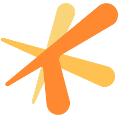

Professional work
Two roles at Tencent Games' TiMi Studio Group, one in technical art and one in production. Pick a tab to see each area of ownership.

Tencent Games · TiMi Studio Group
Technical Art Intern (Tools & Pipeline), J3 Studio · Delta Force · Mar – Jul 2026
Project Management Intern, G1 Studio · Unannounced AAA title · Jan – Mar 2026
AI-powered DCC tools
- Designed and built a PBR tiling-material generator for Substance Designer: AI seeding, seamless tiling, automatic Base Color / Normal / Roughness / Height / Metallic maps, de-lighting and a searchable material library.
- Built a Photoshop AI toolkit with 11 features, including text-to-image, inpainting, canvas expansion, multi-view, object extraction, upscaling, VLM analysis and semantic/depth layer decomposition. Results arrive as non-destructive layers.
- Architected a gateway-based, model-agnostic client so new providers plug in without UI changes.
- Co-designed silent JS hotfixes + mandatory installer updates to keep a large art team on compatible builds.


Centralized shader library
Co-developed a centralized shader library that consolidated the project’s existing shading solutions into one maintained source.
Established cross-platform validation benchmarks so shaders and assets could be checked against the same standard on every target platform.
Streamlined compliant asset production for both internal art teams and external vendors, with fewer one-off shaders to support.
Look development & AI research
Prototyped LoRA-based stylization workflows to support project-specific look development and asset generation.
Evaluated multimodal 3D AI technologies against production needs.
Delivered technical recommendations that informed the development of an internal AI-driven art platform.
Production pipelines for TA / VFX
- Managed end-to-end production pipelines for gameplay features and Technical Art / VFX assets, from feature planning and risk management through implementation, asset integration, validation and milestone delivery.
- Coordinated iteration planning and production schedules to keep scope, timelines and quality objectives aligned.
Seeing the TA/VFX pipeline from the producer’s side taught me where assets actually stall (hand-offs, validation, integration). I now design tools to remove those bottlenecks.